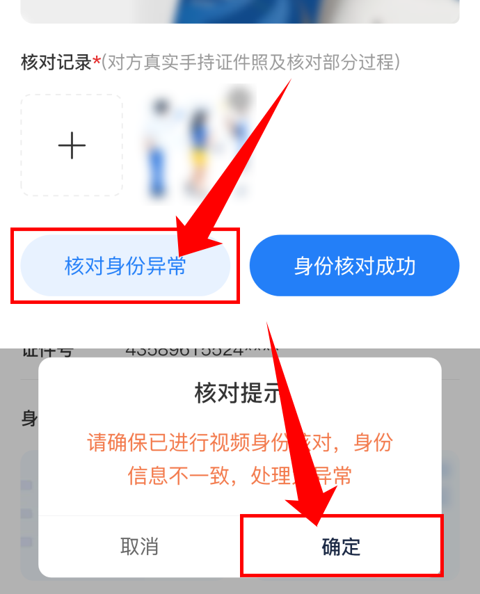

新手指引
>
解除风控
解除风控
解除风控需要成为审核员，成为审核员后用户如果触发风控系统会为用户自动分配在线审核员，进行解除风控的操作
第一步:首页进入个人菜单页，菜单中点击风险解除项，进入风险页面列表
第二步:进入风控列表后，点击“核对身份信息"按钮对联系触发风控的用户进行身份核对，并上传核对记录，核对完成之后，无异常点击”身份核对成功“，弹出弹窗进行再次确认
第三步:身份核对成功后，列表上给用户解除风控即完成用户的风控解除
身份异常怎么处理
如果身份核对异常，上传核对记录后点击"核对身份异常"，弹窗再次确定处理为异常

身份核对异常后，如异常情况解决可点击"核对身份异常"进入核对身份信息页面，点击底部解除异常按钮，重新提上传核对记录，点击确定解除后在列表页进行解除风控，即完成用户的风控解除